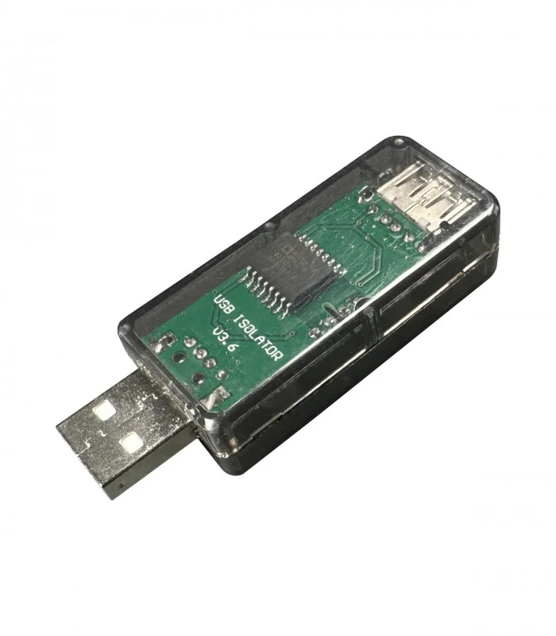

Troubleshooting¶
Need Help? Getting Effective Support
Before asking for help, see How to Get Effective Support at the end of this document for guidance on providing complete information that leads to faster diagnosis and resolution.
General Troubleshooting Steps¶
Before diving into specific issues, try these general troubleshooting steps that resolve many common problems:
Reset to Factory Defaults¶
If you’re experiencing unexpected behavior, instability, or effects issues, resetting to factory defaults is an excellent first troubleshooting step:
- Open VPforce Configurator
- Click “Factory Reset” button
- Click “Import Rhino Defaults” button
- Click “Store Settings” to save
This ensures you’re working with known-good baseline settings and eliminates configuration issues as a potential cause.
When to Factory Reset
Factory reset is particularly useful when:
- Effects feel wrong or inconsistent
- After firmware updates
- Before testing new configurations
- When troubleshooting stability issues
Simulator-Specific Issues
Some issues are specific to certain simulators. If your problem only occurs in a particular game, see the Game Specific Troubleshooting page and the Known Issues appendix for simulator-specific guidance.
Power Issues¶
Base Does Not Power On At All¶
Issue:
The Rhino base shows no signs of life - no LED indicators, no response when connected, and does not appear in Windows Device Manager or VPforce Configurator.
Understanding Rhino’s Power System:
The Rhino has two separate power systems:
- USB Power (5V): Powers the control electronics, USB communication, and status LEDs
- DC Power (20V): Powers the motors and drive electronics
If the base does not power on at all, the USB power path is the most likely culprit.
Quick Troubleshooting Checklist¶
Before diving into detailed diagnostics, try these essential steps:
- Verify USB connection - Ensure the USB cable is firmly seated and try a different USB cable if available
- Try different USB ports - Test multiple USB ports (rear panel preferred over front panel)
- Eliminate USB hubs - Disconnect any USB hubs and connect the Rhino directly to a motherboard USB port
- Check Device Manager - Press
Win + Xand open Device Manager to verify Windows detects the device - Test DC power connection - Verify the DC barrel jack is firmly seated on the back of the Rhino
Tip
For more detailed USB troubleshooting steps and solutions, see the USB Connection Issues section below. This section covers comprehensive diagnostic procedures and explains common causes for each symptom.
Common Causes and Solutions¶
1. Faulty USB Cable
USB cables are a frequent point of failure, particularly if subjected to repeated bending or tension:
- Verification: Test the cable with another USB device (mouse, keyboard, etc.)
- Solution: Replace with a high-quality USB cable (USB 2.0 is sufficient; keep cable under 3 meters)
2. USB Port Issues
Some motherboard USB ports have poor power delivery or signal integrity:
- Solution: Test multiple USB ports systematically and prefer motherboard rear-panel USB ports over front-panel ports
- Front-panel ports often have longer internal cables and higher insertion losses
3. USB Hub Power Delivery
USB hubs, especially unpowered hubs, can fail to provide adequate power:
- Solution: Always connect the Rhino directly to a motherboard USB port
- If a hub is absolutely necessary, use a powered USB hub with external power supply
4. Electrical Noise or Ground Loops
Electrical noise from the PC’s USB bus can prevent proper device recognition:
- Solution: Use a USB isolator to eliminate noise (see USB Isolator Recommendation section)
- This is particularly effective in systems with many high-power devices
5. DC Power Connection Issue
Even with USB detection, a loose DC connection can prevent the device from initializing:
- Solution: Firmly reseat the DC barrel jack connector on the back of the Rhino
- Ensure DC power is being supplied to the board (the board should initialize after USB detection)
6. Mainboard Damage (Rare)
In rare circumstances, the Rhino mainboard can be damaged by:
- Electrostatic discharge (ESD) during handling
- Ground loops between PC and power supply — especially when reconnecting power or if the DC ground connection is unstable (see USB Isolator Recommendation)
-
Voltage transients on the USB bus
-
Solution: If all troubleshooting steps fail and you’ve verified the USB cable, ports, and DC connection are good, the mainboard may be damaged
- Contact VPforce support for further diagnostics and potential RMA
Device Powers On But Motors Have No Power¶
Issue:
The Rhino appears in Windows and VPforce Configurator shows the device connected, but the motors remain unpowered. The stick feels completely limp, and FFB effects have no effect. Motor status may show OFFLINE or FAULT_UNDERVOLTAGE.
Understanding the Problem:
This scenario indicates the USB power path is working (electronics are powered), but the DC power path (20V) is faulty. The motors require 20V DC to operate, supplied by an external power supply.
Quick Troubleshooting Checklist¶
- Check power supply LED - Verify the PSU is powered and LED is illuminated
- Measure PSU output - Using a multimeter (if available), measure ~20V at the PSU DC connector
- Inspect DC connections - Ensure the DC barrel jack on the Rhino is firmly seated
- Check DC cable - Look for visible damage, kinks, or loose connectors
- Test with known-good PSU - If available, try a different 20V power supply to isolate the problem
Common Causes and Solutions¶
1. Faulty Power Supply
Power supplies can fail over time, particularly under sustained high-current loads:
- Symptoms: No voltage output, voltage significantly below 20V, or voltage drops dramatically under load
- Verification: Measure PSU output with multimeter (should read ~20V DC)
- Solution: Replace with a known-good 20V power supply (6-8A minimum capacity recommended)
2. Poor DC Connector Contact
The DC barrel jack can become loose or develop poor contact over time:
- Symptoms: Intermittent motor power, motors work sometimes but not others, vibrations cause power loss
- Verification: Ensure connector is firmly seated; wiggle it gently to check for play
- Solution: Reseat the DC connector firmly; if problem persists, replace the DC cable or jack
3. Faulty DC Cable
DC cables can develop internal breaks or high resistance:
- Symptoms: Voltage present at PSU but not at Rhino, intermittent operation depending on cable position
- Verification: Measure voltage at both PSU output and Rhino DC input to compare
- Solution: Replace DC cable with a known-good cable (18AWG or heavier recommended)
4. Failing E-Stop Switch
E-Stop switches can develop high internal resistance or fail to make contact:
- Symptoms:
FAULT_UNDERVOLTAGEerrors, motors intermittently lose power, voltage sag under load - Verification: Check if E-Stop is engaged or bypass it temporarily to test
- Solution: Replace E-Stop switch if bypassing resolves the issue
5. Insufficient PSU Capacity
Power supply may not provide sufficient current for high-torque FFB operation:
- Symptoms: Voltage correct at idle but drops under load, motors work at low forces but fault at high forces,
FAULT_UNDERVOLTAGEduring intense FFB - Verification: Measure voltage while activating test FFB effects in Configurator
- Solution: Upgrade to higher-capacity power supply (8A or higher recommended)
Ground Loops and Electrical Noise
Poor DC connections can introduce ground loops that cause both power delivery issues and USB instability. If you experience both motor power issues and USB connection issues simultaneously, inspect DC connections first—fixing the DC path often resolves USB issues as well.
Verification After Repairs¶
After applying a fix, verify the solution:
- Measure DC voltage - Should read ~20V with no load, remain above 18V under typical FFB load
- Check motor status in Configurator - Should show
RUNNING, notOFFLINEorFAULT_UNDERVOLTAGE - Test FFB effects - Activate test effects and verify motors respond consistently with appropriate force
USB Connection Issues¶
Issue:
The Rhino exhibits intermittent connection problems, instability, or appears to disconnect and reconnect frequently. This typically manifests as effects stuttering, dropping out momentarily, or the device appearing offline in VPforce Configurator.
Why USB Communication Matters for FFB:
The Rhino FFB joystick communicates using high-frequency bidirectional data. Unlike a standard joystick that just sends “X and Y” coordinates, an FFB stick is constantly receiving “Force” instructions from the sim while sending “Position” data back. Any interruption in this communication—even brief pauses from USB throttling or power management—can cause jerky motion, lag, freezing, or complete sim lockup. This is why USB connection quality is critical for smooth FFB operation.
Common Causes & Solutions¶
Check the following items in order:
-
USB Hub
- If you are currently using a USB hub, disconnect it and connect the Rhino directly to your PC
- USB hubs can introduce latency, power delivery issues, and signal integrity problems — see Why USB Hubs Cause Problems with FFB Devices below for a technical explanation
- Test the direct connection for stability
-
USB Port
- Try a different USB port on your PC
- Some USB ports have better power delivery or less electrical noise than others
- Test multiple ports to identify if the issue is port-specific
- If available, try USB 3.0/3.1 ports (blue ports) rather than USB 2.0 (black ports)
-
USB Cable
- Try a different USB cable if possible
- USB cables can degrade over time or have internal damage
- A faulty cable is a common cause of intermittent connection issues
-
DC Power Plug
- Inspect the DC power connector on the back of the Rhino
- If the DC power plug pulls out easily or feels loose, vibrations during operation might be causing intermittent power connection loss
- Poor DC connections can also introduce ground loops, causing electrical noise and instability
- Ensure the power plug is firmly seated and making good contact
- This is a frequent cause of instability during intense FFB effects
Tip
If you have access to multiple USB cables and ports, systematically test each combination. Document which configuration is most stable—this can help identify whether the issue is related to your specific port, cable, or something else entirely.
Important
Once you have confirmed a stable connection with direct PC connection and a known-good cable/port, the instability is likely resolved. If problems persist, the device itself may have a hardware issue and should be checked by support.
Why USB Hubs Cause Problems with FFB Devices¶
The standard advice is “never plug your FFB joystick into a USB hub” — but rarely does anyone explain why. When you push heavy HID input/output traffic, especially the kind required by a high-refresh-rate FFB device, you start hitting the physical and architectural limits of how USB hubs manage data.
The Transaction Translator (TT) Bottleneck¶
This is the most common culprit. Many FFB devices operate at USB Full-Speed (12 Mbps) rather than High-Speed (480 Mbps), because 12 Mbps is generally plenty of bandwidth for HID data.
When a 12 Mbps device is plugged into a High-Speed USB 2.0 or 3.0 hub, the hub must translate that traffic using a hardware component called a Transaction Translator (TT):
- Single-TT (STT) hubs — Most cheap hubs are Single-TT. One 12 Mbps translator is shared across all ports. If you plug in your FFB joystick, a mouse, a keyboard, and a button box, they all fight for that same narrow pipe. FFB data gets delayed or dropped.
- Multi-TT (MTT) hubs — High-end hubs have a dedicated TT per port. Each Full-Speed device gets its own 12 Mbps lane up to the hub’s High-Speed uplink. FFB devices perform significantly better on MTT hubs.
HID Interrupt Transfers Under Load¶
USB HID devices use Interrupt Transfers — they guarantee a specific polling rate (for example, every 1 ms). When you introduce a hub, scheduling complexity increases. Cheap hub silicon may miss polling windows.
FFB devices are particularly demanding because they rely heavily on Interrupt OUT transfers (data from PC to device) to command the motors. Continuous Interrupt OUT traffic at high rates is notoriously hard on cheap hub controllers, causing micro-stutters or completely dropped FFB commands.
Buffer Overflows and Dropped Packets¶
FFB generates bursty traffic. When you hit turbulence or a surface in a sim, the PC sends a rapid sequence of OUT reports while the joystick simultaneously sends back rapid position data.
Cheap hubs have very little internal buffer RAM. If the hub is waiting to send data upstream, packets that overflow the buffer are simply discarded. Unlike bulk transfers (used for storage), HID Interrupt transfers have no guaranteed retry mechanism — dropped packets are gone forever. The result is a dead spot or micro-freeze in your FFB.
Power Fluctuations and Micro-Disconnects¶
Even if your FFB joystick has its own external power supply for the motors, the USB logic board still relies on the 5V line from the USB cable to maintain its data connection. An unpowered or poorly powered hub can sag the 5V line under combined load, causing the USB logic to brownout and trigger a re-enumeration. Windows will silently recover, but you will experience a momentary FFB freeze while the device reconnects.
Recommendations if You Must Use a Hub¶
If direct connection to a motherboard port is not possible:
- Use a Multi-TT (MTT) hub — This is the single most important factor. Some manufacturers (such as StarTech) and industrial USB hub brands explicitly advertise MTT support.
- Use an externally powered hub — never rely on bus power (from the PC) to run a hub that handles an FFB device.
- Isolate high-bandwidth devices — Put your FFB joystick on a separate physical USB root hub on your motherboard from VR headsets or webcams. VR headsets and cameras use Isochronous transfers, which reserve large, non-negotiable blocks of USB bandwidth and can crowd out FFB data.
Disable USB Selective Suspend¶
Issue:
Windows can automatically suspend USB ports to save power, causing the USB port to be “throttled” and resulting in system performance issues. Symptoms include jerky motion in VPforce Configurator, sim freezes or lockups, and system sluggishness when the Rhino is connected.
Solution:
Windows USB Selective Suspend can be disabled through Power Options. Follow these steps:
-
Open Power Options:
- Right-click the battery/power icon in the taskbar
- Select Power settings or go to Settings → System → Power & battery
-
Click Advanced power settings (or Power Options if in classic settings)
-
Click Change plan settings for your current power plan
-
Click Change advanced power settings
-
Expand USB settings in the list
-
Expand USB selective suspend setting
-
Set the value to Disabled for both “On battery” and “Plugged in”
-
Click Apply → OK
-
Restart your PC for the change to take effect
-
Reconnect the Rhino and verify the issue is resolved
Tip
If you have multiple power plans (Balanced, High Performance, Power Saver), ensure you disable USB Selective Suspend for all of them, or switch to a plan where it is already disabled.
USB Isolator Recommendation¶
A USB isolator is strongly recommended for all RHINO setups. It sits between the PC and the RHINO, physically breaking the electrical ground path between them. This eliminates ground loop noise, reduces EMI, and — critically — prevents hardware damage from ground faults.

Ground Loops Can Destroy Boards
Without isolation, the PC and the RHINO share a common ground through the USB cable. If the main DC power ground connection is interrupted — even briefly during a reconnection — high motor currents will attempt to flow through the USB cable, into the PC ground, through the power strip, and back to the PSU. This surge can destroy the TVS protection diodes on the RHINO board, or worse, damage the board itself.
In multi-device setups sharing a USB hub, a single ground fault can propagate through the shared USB ground and take out multiple boards simultaneously — even if they use separate power supplies. See Powering Multiple FFB Devices from a Single PSU for detailed wiring guidance.
Benefits of a USB isolator:
- Prevents hardware damage from ground faults and power surges through the USB path
- Eliminates ground loops between the PC and the RHINO
- Protects electronics from voltage spikes and transient faults on the USB bus
- Resolves connection instability in systems with high electrical noise
Ground Connection Best Practices
Always ensure the DC ground (GND) connection is the first to make contact and remains stable at all times. When connecting or reconnecting power, plug in the DC barrel jack firmly before connecting USB. If your ground path is unreliable, all high-current return paths will route through the USB cable — a recipe for board damage.
An alternative to a USB isolator is using an ungrounded power strip to break the ground loop path. However, a USB isolator is the safer and more targeted solution.
Where to Find USB Isolators:
Search for AduM3160 isolator boards on AliExpress, Amazon, or other electronics retailers. The AduM3160 is a popular, affordable USB 2.0 isolator IC commonly available on ready-made isolator boards. When searching, look for:
- “AduM3160 isolator board” or “USB isolator AduM3160”
- Pre-assembled USB isolator modules (no soldering required)
- Boards with both USB-A connectors or USB-A to USB-C options
Cost is typically low (under $10-20 USD), making it a worthwhile investment to protect your hardware.
WinUSB / WebUSB Firmware Update Issues¶
Legacy Firmware WebUSB Issue (1.0.16 and older)¶
Issue:
On Windows 10/11 with firmware 1.0.16 and older, the Rhino may appear correctly in Windows, but WinUSB fails to operate, preventing firmware updates through WebUSB. Users may see network errors in the WebUSB tool. This problem is fixed in newer firmwares.
You can apply a simple registry fix to restore WebUSB functionality. This requires administrative privileges.
Steps:
- Press Start, type PowerShell, right-click Windows PowerShell, and select Run as administrator.
-
Paste the following command and press Enter:
- Unplug the Rhino from the USB port and plug it back in. - Test the connection in the WebUSB tool - firmware updates should now work as expected.Set-ItemProperty -Path "HKLM:\SYSTEM\CurrentControlSet\Enum\USB\VID_FFFF&PID_2055&MI_03\*\Device Parameters" -Name "DeviceInterfaceGUID" -Value "{DA10CDEF-26A6-47D9-970E-B3D561A277FA}"
Note
- This workaround only applies to firmware 1.0.16 and older. Updating the latest firmware will remove the need for this registry modification.
- Only run the command exactly as provided; editing the registry incorrectly can cause system issues.
WinUSB Driver Conflicts and Cleanup¶
Many Windows systems handle Rhino’s WebUSB interface without any special setup. Others don’t. The difference usually comes down to what Windows has stored from past hardware or software. Windows keeps old USB drivers in its internal driver store, and sometimes it silently reuses those drivers for new devices. If one of those older drivers isn’t compatible with WebUSB, Rhino may get matched to the wrong driver and the browser will show connection or “network” errors even though the device is working correctly in Configurator or game itself. The steps below clear out these leftover drivers so Windows can load the correct Microsoft WinUSB driver that WebUSB needs.
If you encounter WebUSB connection issues, driver conflicts from previous installations (particularly from Zadig or other USB tools) may be preventing proper WinUSB operation. Follow these steps to clean up conflicting drivers and restore proper WebUSB functionality.
Quick Reset (try this first)¶
- Disconnect Rhino from the PC
- Reboot Windows
- Connect Rhino directly to a USB port on the PC (not a hub)
- Test WebUSB connection
If errors persist, continue with the full driver cleanup procedure below.
Full Driver Cleanup Procedure¶
Step 1: Remove old Rhino drivers from Device Manager
- Open Device Manager (Win + X)
- View → Show hidden devices
- Expand “Universal Serial Bus devices”, “USB devices”, “Other devices”, and “LibUSB” (if present)
- Right-click every entry related to “Rhino DFU” or showing your device’s VID/PID → Uninstall device
- If Windows shows a checkbox “Delete the driver software for this device”, enable it before uninstalling
Leave Device Manager open for now.
Step 2: Clean driver packages from Windows driver store (optional)
Advanced Procedure
The following driver cleanup steps involve modifying Windows driver store using command-line tools. This procedure is intended for advanced users who are comfortable with administrative command-line operations. Incorrectly removing driver packages can affect other USB devices on your system. If you are not confident with these steps, you can skip to step 3.
- Open Start → type “cmd” → right-click → Run as administrator
- List all driver packages:
pnputil /enum-drivers > %temp%\drivers.txt
- Open the file:
notepad %temp%\drivers.txt
- In the list, look for driver entries that mention:
- Rhino
- Your device VID_FFFF / PID_205x
- WinUSB
- libusb
- libusbK
- libwdi
Each entry shows something like Published name: oem47.inf.
- For each matching driver, run:
pnputil /delete-driver oem47.inf /force /uninstall
Replace oem47.inf with the actual name. If Windows says “driver is in use”, unplug the device and run the command again.
Step 3: Remove ghost interfaces
Back in Device Manager:
- View → Show hidden devices
- Remove any greyed-out duplicates of “Rhino DFU” or anything matching VID/PID
- Unplug the device after cleaning
Step 4: Reboot Windows
A clean reboot ensures Windows forgets cached bindings.
Step 5: Reconnect Rhino and verify WinUSB installation
Plug in Rhino. Windows should now load Microsoft’s built-in WinUSB (winusb.sys) automatically.
Verify correct driver:
- Device Manager → open “Rhino DFU” device → Properties
- Driver tab should show:
- Provider: Microsoft
- Driver file: winusb.sys
Forcing Windows to Use WinUSB (if automatic installation fails)¶
If Windows picks the wrong driver, manually bind WinUSB:
- Right-click “Rhino DFU” in Device Manager → Update driver
- Choose “Browse my computer for drivers”
- Choose “Let me pick from a list of available drivers”
- Select “Universal Serial Bus devices”
- Pick “WinUSB Device” or “USB Device (WinUSB)” depending on Windows version
- Install
This uses Microsoft’s own signed WinUSB and does not require Zadig or third-party tools.
Browser Cleanup¶
After correcting the driver:
- Chrome/Edge → Settings → Privacy → Site settings → USB devices → Clear permissions for WebUSB tool
- Clear site data for the WebUSB domain
- Test connection in a fresh tab or Incognito window
Important: Avoid Zadig for Rhino
Zadig and similar USB driver replacement tools can cause persistent driver conflicts with the Rhino. These tools leave fingerprints in the Windows driver store that can prevent proper WinUSB operation even after uninstalling. If you previously used Zadig with Rhino, follow the full driver cleanup procedure above to remove all traces.
Motor LED Indicators¶
Each motor has an integrated driver with a status LED that provides diagnostic information through flash patterns:
-
Green flashes — indicate the assigned motor ID:
- 1 flash = Motor ID 0 (pitch / Y-axis)
- 2 flashes = Motor ID 1 (roll / X-axis)
-
Red flashes — indicate a fault condition. Check the Configurator status bar for the specific fault code (see Motor Faults below).
-
LED normally OFF, brief blink every few seconds — the motor has power but is not actively communicating with the Rhino main board.
Motor faults¶
FAULT_UNSTABLE¶
Issue:
The Rhino reports a FAULT_UNSTABLE error. This fault typically occurs suddenly, often preceded by an audible thump or impact sensation from the device.
Note
The device’s fault message usually identifies which motor (or axis) triggered the fault. Check the indicated motor/axis first — it typically points straight to the side that needs inspection.
Cause:
This fault is most commonly caused by belt slippage on either the X-axis or Y-axis. When the belt connecting a motor to its pulley loses tension or alignment, the motor and pulley can slip relative to each other. The sudden slip causes the Rhino to detect an unexpected position change that doesn’t match the expected motor command, triggering the stability check and generating the fault. The audible thump is often the moment when slippage occurs.
Resolution:
-
Check belt tension: Inspect the axis belt which produced the fault. The belts should be firm but not over-tightened.
-
Re-tighten if necessary: If either belt is loose, carefully tighten it to restore proper tension. See the Belt Tensioning Guide for detailed instructions.
-
Run Auto Calibration: After adjusting tension and alignment, launch the VPforce FFB Configurator and run Auto Calibration from the Settings tab.
-
Verify calibration values: Once calibration completes, check the calibration values. You should see values around C:~2000 for both axes. If the values are significantly different, the belts may need further adjustment.
FAULT_UNDERVOLTAGE¶
Issue:
The Rhino reports a FAULT_UNDERVOLTAGE error when supply voltage drops below 8 volts.
Cause:
This fault protects motor drivers by halting operation when voltage is insufficient. The 8V threshold ensures reliable operation and prevents damage.
Under load (during active force feedback or high-torque movements):
- Poor electrical connection (loose or corroded power connector, high resistance in power path)
- Failing power supply (unable to maintain voltage during peak current draw)
- Insufficient PSU capacity (power supply rated below recommended specifications)
- Failing E-Stop switch (high internal resistance or intermittent disconnection)
At idle (no force feedback active):
- E-Stop pressed (normal behavior: motor power cut momentarily shows fault until capacitors discharge, then motor status shows
OFFLINE) - Faulty PSU (unable to maintain stable output without load)
Resolution:
-
Check power connections: Inspect PSU cables and connectors. Ensure tight, clean, corrosion-free connections.
-
Verify PSU output voltage: Measure PSU output voltage with multimeter under no load. Should match rated voltage.
-
Test under load: Monitor PSU voltage during typical Rhino operation. Significant voltage sag indicates insufficient PSU capacity or poor connections.
-
Replace or upgrade PSU: If power supply cannot maintain adequate voltage under load, replace with higher-capacity unit.
How to Get Effective Support¶
Providing complete information up front dramatically speeds up diagnosis and resolution. Follow this guide to get help as quickly as possible.
Required Screenshots¶
Always include screenshots of your VPforce Configurator:
- Effects Tab — shows current FFB effect settings and active effects
- Settings Tab — shows global gain multipliers and force settings
- Debug Tab — particularly useful when the issue is occuring as it shows all active effects on the device
- Button Mapping Tab — if your issue involves buttons or inputs
Screenshots are essential
Without Configurator screenshots, the support team cannot diagnose your issue effectively. These screenshots provide most of the information needed for troubleshooting.
Describe the Problem Clearly¶
Include the following in your support request:
- What exactly happens? — describe the specific behavior (e.g. “stick goes limp with no centering force” rather than “FFB doesn’t work”)
- When does it occur? — specific simulator, aircraft, action, or situation
- Is it consistent or intermittent? — every time, or only sometimes?
- When did it start? — new issue, or always been this way?
- What have you tried? — prevents suggesting steps you’ve already completed
System Information¶
- Rhino firmware version (visible in Configurator)
- Simulator name and version (e.g. DCS World 2.9.8, IL-2 v5.201)
- Grip type and extensions (e.g. VKB, Virpil, extension length)
- Recent changes (firmware updates, new hardware, configuration changes)
Real-Time Troubleshooting¶
While the issue is occurring:
- Watch the Debug tab Loaded Effects panel — game-created effects appear in real-time and force values change dynamically while flying
- Check the Debug tab — look for error messages, connection issues, or motor faults
-
TelemFFB Users (if applicable):
- Check TelemFFB log window for connection errors or warnings
- Verify TelemFFB is connected to simulator
- Post or screenshot TelemFFB log output when reporting issues
- Check the monitor tab telemetry window to verify data reception
- Check the active effects panel on the monitor tab to understand what is playing
-
One problem at a time
If you have multiple issues, describe each one separately. Mixing several unrelated problems in one request makes diagnosis much harder.
Common Pitfalls to Avoid¶
- “It doesn’t work” without details - Define exactly what doesn’t work
- Missing screenshots - Without Configurator screenshots, diagnosis is guesswork
- No troubleshooting steps - Mention what you’ve already tried
- Incomplete system info - Firmware version and simulator details are essential
- Vague timing - “Sometimes” isn’t helpful - describe exact conditions
- Assuming others know your setup - Describe your full configuration
Where to Get Support¶
VPforce Discord Community:
- Most active support channel
- Community and developers respond quickly
- Real-time troubleshooting assistance
- Type
!supportin Discord for quick reminder of required info
Documentation Resources:
Before Asking:
- Check this troubleshooting guide for your specific issue
- Try factory reset and verify problem persists
- Gather all required screenshots and information
- Prepare clear problem description
Getting Faster Help
The more complete your initial support request, the faster you’ll get help. Take 5 minutes to gather screenshots and details up front - it saves hours of back-and-forth questions later.